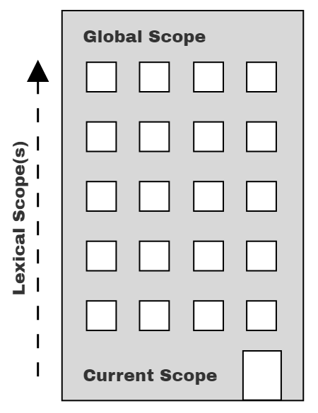

Functions
Functions consume and produce values. You’ve been using functions all along!
A few are:string-append that consumes 2 strings and produces them togetherrectangle that consumes 2 numbers and 2 strings and produces an imagesqrt that consumes 1 number and produces another number+ to add an arbitrary amount of numbers.
but we can create our own functions.
#How to create a function?
; creating a function
;the function name and the argument names can be whatever you want, just has to be matching in the body
(define (<f-name> <arg1>...)
<body>) ; where every instance of the named args are replaced in the body.
#How are functions useful?
In the previous section on variables, we went over how you can make your program more readable and maintable by storing constant data in variables, but sometimes that still isn’t enough because you’d end up with way too many variables. Functions let us take it a step further by factoring out varying variables/data. Let’s look back to our image exercises.
If I were to ask you to make 10 stop signs, of varying size, 30, 60, 90, increasing by 30 every time etc, it’d be a huge hastle to keep track of lot of variable names
; creating a function
(require 2htdp/image)
(define stop1-octsize 30)
(overlay
(text "STOP" (- stop1-octsize 5) "white")
(regular-polygon stop1-octsize 8 "solid" "red"))
(define stop2-octsize 60)
(overlay
(text "STOP" (- stop2-octsize 5) "white")
(regular-polygon stop2-octsize 8 "solid" "red"))
(define stop3-octsize 90)
(overlay
(text "STOP" (- stop3-octsize 5) "white")
(regular-polygon stop3-octsize 8 "solid" "red"))
; ... I can do more but i think you get the point
We can instead create a function that will create the variable in a local temporary environment to vary the size of the stop sign for us, and have the code read like its creating a stop sign
; name of the function is stop-sign
; size is a parameter that we named arbitrarily
; 1: encapsulates a set of operations
(define (stop-sign size)
(overlay
(text "STOP" (- size 5) "white")
(regular-polygon size 8 "solid" "red")))
; no more needing to create variables
; and copy and pasting overlay, text, and regular polygon
; 2: much more meaningful name, stop-sign
(stop-sign 30) ; all in 1 line to create a stop-sign
(stop-sign 60)
(stop-sign 90)
; 3: reduced a lot of repition compared to example above
#Exercise 2 Create an octogon function
You may notice that 2htdp/image doesn’t contain an octogon function built in. It’s a lot of tedious typing for all the parameters, e.g solid & red.
(define size1 30)
(define size2 90)
; all these parameters to create an red octogon.
; Also unclear what this does to a stranger until they run the code or read docs
(regular-polygon size1 8 "solid" "red")
(regular-polygon size2 8 "solid" "red") ; copy & paste and change the size every time(require 2htdp/image)
; PROBLEM 2 red-oct
; Create a function who's name is "red-octogon" with a parameter named "size",
; and in the body it should produce a red octogon of varying size.
; use it to create red octogons of size 30 60 90
; (regular-polygon size 8 "solid" "red")Answer
(require 2htdp/image)
; PROBLEM 2 red-oct
; Create a function who's name is "red-octogon" with a parameter named "size",
; and in the body it should produce a red octogon of varying size.
; use it to create red octogons of size 30 60 90
; (regular-polygon size 8 "solid" "red")
; if we make a function instead, we can give it a meaningful name and vary the value
; use check-syntax and the stepper to see what size is substituted for.
(define (red-octogon size)
; body will replace all instances of size with what we pass in
(regular-polygon size 8 "solid" "red"))
; we can create red octogons without needing to type solid red
; the argument, aka parameter/operand makes it easy to vary the size
; we can also understand immediately what this will create
(red-octogon 30)
(red-octogon 60)
(red-octogon 90)
#Exercise 2.1 Create a warning sign function
(require 2htdp/image)
; PROBLEM 2.1 Warning Sign
; create a function named "warning-sign" that will take in a "size" parameter
; its should produce a warning-sign given the size
; use the function to create warning signs of size 30 60 90
; (refer back to images 1.1 if needed)
; https://howtocode.pages.dev/images.html#exercise_1_image_shapes
#|
(overlay
(text "!" 30 "black")
(triangle 40 "solid" "yellow"))
|#Answer
(require 2htdp/image)
; PROBLEM 2.1 Warning Sign
; create a function named "warning-sign" that will take in a "size" parameter
; its should produce a warning-sign given the size
; use the function to create warning signs of size 30 60 90
; (refer back to images 1.1 if needed)
; https://howtocode.pages.dev/images.html#exercise_1_image_shapes
#|
(overlay
(text "!" 30 "black")
(triangle 40 "solid" "yellow"))
|#
(define (warning-sign size)
(overlay
(text "!" size "black")
(triangle size "solid" "yellow")))
(warning-sign 30)
(warning-sign 60)
(warning-sign 90)
#Exercise 2.2 Create a trapezoid function
(require 2htdp/image)
; PROBLEM 2.2 trapezoid
; create a function named "trapezoid" that will take in a "size" parameter
; it should produce a trapezoid given a size
; use the function to create trapezoids of sizes 30 60 90
; (refer back to images 1.2 if needed)
; https://howtocode.pages.dev/images.html#exercise_1_image_shapes
#|
(beside
(flip-horizontal (right-triangle 30 30 "solid" "red"))
(square 30 "solid" "red")
(right-triangle 30 30 "solid" "red"))
|#Answer
(require 2htdp/image)
; PROBLEM 2.2 trapezoid
; create a function named "trapezoid" that will take in a "size" parameter
; it should produce a trapezoid given a size
; use the function to create trapezoids of sizes 30 60 90
; (refer back to images 1.2 if needed)
; https://howtocode.pages.dev/images.html#exercise_1_image_shapes
#|
(beside
(flip-horizontal (right-triangle 30 30 "solid" "red"))
(square 30 "solid" "red")
(right-triangle 30 30 "solid" "red"))
|#
(define (trapezoid size)
(beside
(flip-horizontal (right-triangle size size "solid" "red"))
(square size "solid" "red")
(right-triangle size size "solid" "red")))
(trapezoid 30)
(trapezoid 60)
(trapezoid 90)
#Exercise 2.3 Create a checkerboard function
(require 2htdp/image)
; PROBLEM 2.3: Checkerboard
; create a function named checkerboard that takes in 3 arguments, size, color1 and color2
; it should produce a checkerboard pattern given a size and two colors
; use the function to create checkerboard patterns of:
; 30 red black
; 60 purple brown
; 90 white red
; (refer back to images 1.4 if needed)
; https://howtocode.pages.dev/images.html#exercise_1_image_shapes
#|
(above
(beside (square 20 "solid" "red") (square 20 "solid" "black"))
(beside (square 20 "solid" "black") (square 20 "solid" "red")))
|#Answer
(require 2htdp/image)
; PROBLEM 2.3: Checkerboard
; create a function named checkerboard that takes in 3 arguments, size, color1 and color2
; it should produce a checkerboard pattern given a size and two colors
; use the function to create checkerboard patterns of:
; 30 red black
; 60 purple pink
; 90 green orange
; (refer back to images 1.4 if needed)
; https://howtocode.pages.dev/images.html#exercise_1_image_shapes
#|
(above
(beside (square 20 "solid" "red") (square 20 "solid" "black"))
(beside (square 20 "solid" "black") (square 20 "solid" "red")))
|#
(define (checkerboard size color1 color2)
(above
(beside (square size "solid" color1) (square size "solid" color2))
(beside (square size "solid" color2) (square size "solid" color1))))
(checkerboard 30 "red" "black")
(checkerboard 60 "purple" "pink")
(checkerboard 90 "green" "orange")
#Evaluation and Scope
A function will look for variables inside of itself first, and only if it can’t find it, will it keep looking up until it hits the global scope, and if it still can’t find it after that then it will be an error.
(define z 8)
(define t 6)
(define v 7)
(define (p k v) (- z 2 v 9 7))
; there are two v's BUT v will be 4, NOT 7
; and z will be 8
(p 3 4) ; evaluates to -14
; NOT -17, had v been 7
A function can access global variables but the global context cannot access variables within a function. What happens inside a function stays inside a function.

You can think of it as looking for your lost kid in a huge multi-floor building. You’re going to start at the first floor and then if you can’t find them, you go up to floor 2, and then look around, then up and up until you hit the final floor.
#Practice Function Eval and Scope
Practice Function Eval and Scope 1
Practice Function Eval and Scope 2
Get used to looking around and resolving what variables to values.
#Conclusion
Functions allow us to re-use and:
- combine a set of operations
- give a meaningful name to the combined operations
- factor out and reduce duplication
thus making our code more shorter, maintainable, and readable, a little similar to how reapted addition on whole numbers like 5 + 5 + 5 + 5 can be re-written more consisely as 5 * 4.
You can use Check-Syntax or the stepper to see this in action to see variable susbtitution for functions in action.